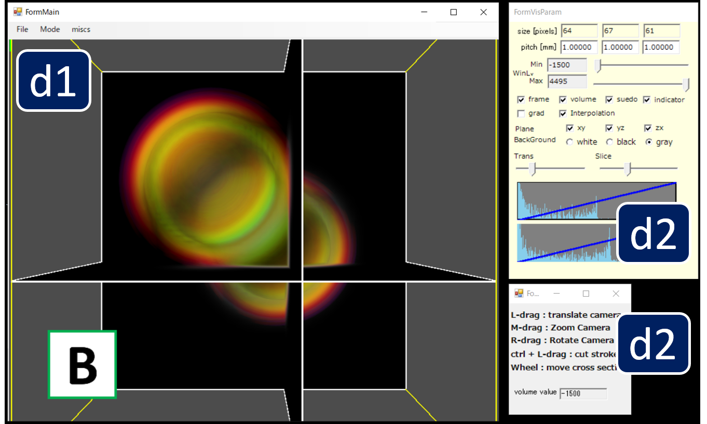

RoiPainter Visualization

RoiPainter I/O Visualization Segmentation Download code (github)
起動画面

RoiPainterを起動すると上記のような画面が表示されます．RoiPainterは以下の3個のWindowより構成されます．
- d-1 MainWindow : 3次元画像を表示する．このWindowを利用して三次元空間へのシード配置や輪郭指定を行う．
- d-2 可視化パラメータダイアログ : 3次元表示に関するパラメータを指定する．詳しくはこちら.
- d-3 ツール操作用ダイアログ : 各可視化・領域分割ツールを操作．ツールごとに異なるダイアログが表示されるので各ツールの説明ページを参照.
可視化パラメータダイアログ
RoiPainter3Dでは，2つのVisualizationモードと，6つのSegmentationモード，2つのRefinementモーどが使用可能です（2019/11現在）．
すべてのモードで，下の”可視化パラメータダイアログ”が表示され，これを利用して可視化に関する項目を指定可能です．
d1. 読み込んだ画像の解像度を提示．すべてのモードで，下の”可視化パラメータダイアログ”が表示され，これを利用して可視化に関する項目を指定可能です．
d2. 画像のpitch(画素の大きさ)を提示．dicom画像の場合は自動的に読み込まれる．自身で編集することも可能．
d3/d4. 表示する画像のWindow Levelの最小値/最大値を指定．
d5. 表示方法 on/offチェックボックス．
■ frame:画像周囲のフレーム表示の有無，
■ volume:三次元画像のvolume renderingの有無，
■ pseudo:疑似カラー利用の有無
■ indicator:左下の方向インジケータ表示の有無
■ grad:切断面上で勾配強度を表示
■ interpolation: Bicubic補間の有無
d6. xy, yz, zx断面の表示の有無．(これに加えて ctrl + マウス左ドラッグで曲断面を生成できる)
d7. 背景色を指定するチェックボックス．
d8. Volume Renderingにおける全体の透明度を指定するスライダー．
d9. Volume Renderingの精度を指定する（左は粗くて速い，右は綺麗で遅い）．
d10. 透明度を指定する伝達関数（横軸:輝度値，縦軸:不透明度）．
d11. 透明度を指定する伝達関数（横軸:勾配強度，縦軸:不透明度）．
※伝達関数指定 : d10, d11の伝達関数は，マウス左ドラッグにて青い線（関数）を編集可能
※Tone mapping : 通常dicom画像などは16bitの精度[-32767,32767]を持つが，表示画像は8bit精度[0,255]に変換する必要がある．この変換はトーンマッピングと呼ばれ，d3とd4の最小値・最大値の間を線形補間することでトーンマッピングを行う．
d7. 背景色を指定するチェックボックス．
d8. Volume Renderingにおける全体の透明度を指定するスライダー．
d9. Volume Renderingの精度を指定する（左は粗くて速い，右は綺麗で遅い）．
d10. 透明度を指定する伝達関数（横軸:輝度値，縦軸:不透明度）．
d11. 透明度を指定する伝達関数（横軸:勾配強度，縦軸:不透明度）．
※伝達関数指定 : d10, d11の伝達関数は，マウス左ドラッグにて青い線（関数）を編集可能
※Tone mapping : 通常dicom画像などは16bitの精度[-32767,32767]を持つが，表示画像は8bit精度[0,255]に変換する必要がある．この変換はトーンマッピングと呼ばれ，d3とd4の最小値・最大値の間を線形補間することでトーンマッピングを行う．
Visualization Standard
このVisualization Standardは，3次元画像を観察するためのツールです．単純なvolume renderingや，平面断面可視化，曲面断面可視化が可能です．
"Menu > ModeSwitch > visualization Standard" をクリックすることで起動できます．
このモードを起動すると，下のツールダイアログが表示され，切断面上にカーソルを置くとその位置の輝度値がダイアログに表示されます．下の図の通り，各ツールのダイアログにはそのツールの簡単な操作方法が記載されています．
"Menu > ModeSwitch > visualization Standard" をクリックすることで起動できます．
このモードを起動すると，下のツールダイアログが表示され，切断面上にカーソルを置くとその位置の輝度値がダイアログに表示されます．下の図の通り，各ツールのダイアログにはそのツールの簡単な操作方法が記載されています．
Visualization Mask
このVisualization Maskは，作成したマスク（分割領域）を観察・編集するためのツールです．
"Menu > ModeSwitch > visualization Mask" をクリックすることで起動できます．
または，領域分割ツールを修了した場合も自動的にこのツールが起動します．
このツールを起動すると，下の通りMain Windowに分割した領域(ROI)が色付きで表示され，右下にツールダイアログも表示されます．
"Menu > ModeSwitch > visualization Mask" をクリックすることで起動できます．
または，領域分割ツールを修了した場合も自動的にこのツールが起動します．
このツールを起動すると，下の通りMain Windowに分割した領域(ROI)が色付きで表示され，右下にツールダイアログも表示されます．
このVisualization Maskでは，ツールダイアログより以下の操作が可能です．
d1. 分割した領域を選択できます．（一番上0番は，読み込み時にすべての画素に付与される背景IDです）d2. ここをチェックすると選択領域をLockし，後に領域分割ツールにより新たな領域IDがつけられることを防げます．
d3. 選択領域の色を変更できます．
d4. 選択領域の透明度を変更できます．
d5. 選択領域に対し，収縮処理を施します．
d6. 選択領域に対し，膨張処理を施します．
d7. 選択領域をobjメッシュとして書き出します．
d8. 選択領域を削除します．
d9. このボタンを押すと，領域ID選択ダイアログが表示され，複数領域を一つの領域に結合できます．
d10. 中空領域を埋める処理を行います．このボタンを押すと，領域ID選択ダイアログが表示され，複数の領域を選択できます．選択した複数領域を前景として，中空になる領域（卵の黄身のように背景から分離されている領域）を新しい領域として登録します．
d11. 疑似的な中空領域を埋める処理を行います．このボタンを押すと，領域ID選択ダイアログが表示され複数の領域を選択できます．さらに，膨張回数指定ダイアログがい表示され，膨張処理の回数を指定できます．この下でシステムは，(i)選択した複数領域を前景として指定回数だけ膨張処理を施し，(ii)膨張した領域に対する中空領域を抽出し，(iii)個の中空領域を指定回数だけ膨張させ，新しい領域として登録します．このツールは，背景と小さな穴で埋まっているような疑似的な中空領域を埋めるのに利用できます．
d10. 中空領域を埋める処理を行います．このボタンを押すと，領域ID選択ダイアログが表示され，複数の領域を選択できます．選択した複数領域を前景として，中空になる領域（卵の黄身のように背景から分離されている領域）を新しい領域として登録します．
d11. 疑似的な中空領域を埋める処理を行います．このボタンを押すと，領域ID選択ダイアログが表示され複数の領域を選択できます．さらに，膨張回数指定ダイアログがい表示され，膨張処理の回数を指定できます．この下でシステムは，(i)選択した複数領域を前景として指定回数だけ膨張処理を施し，(ii)膨張した領域に対する中空領域を抽出し，(iii)個の中空領域を指定回数だけ膨張させ，新しい領域として登録します．このツールは，背景と小さな穴で埋まっているような疑似的な中空領域を埋めるのに利用できます．